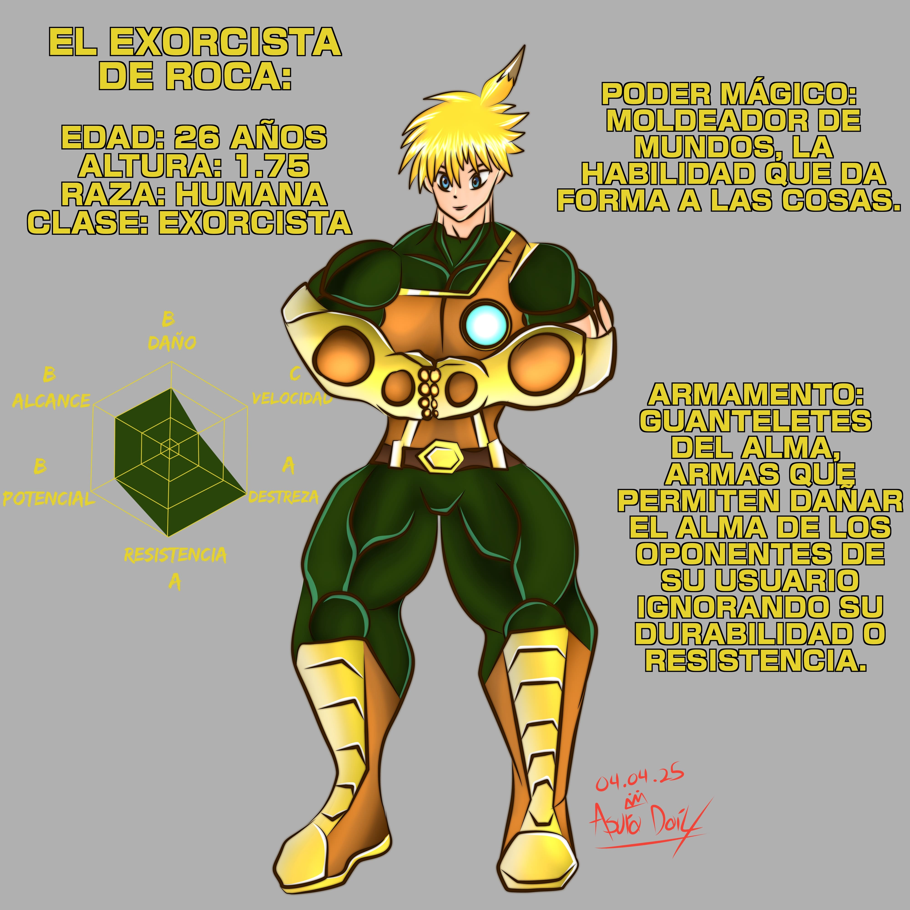
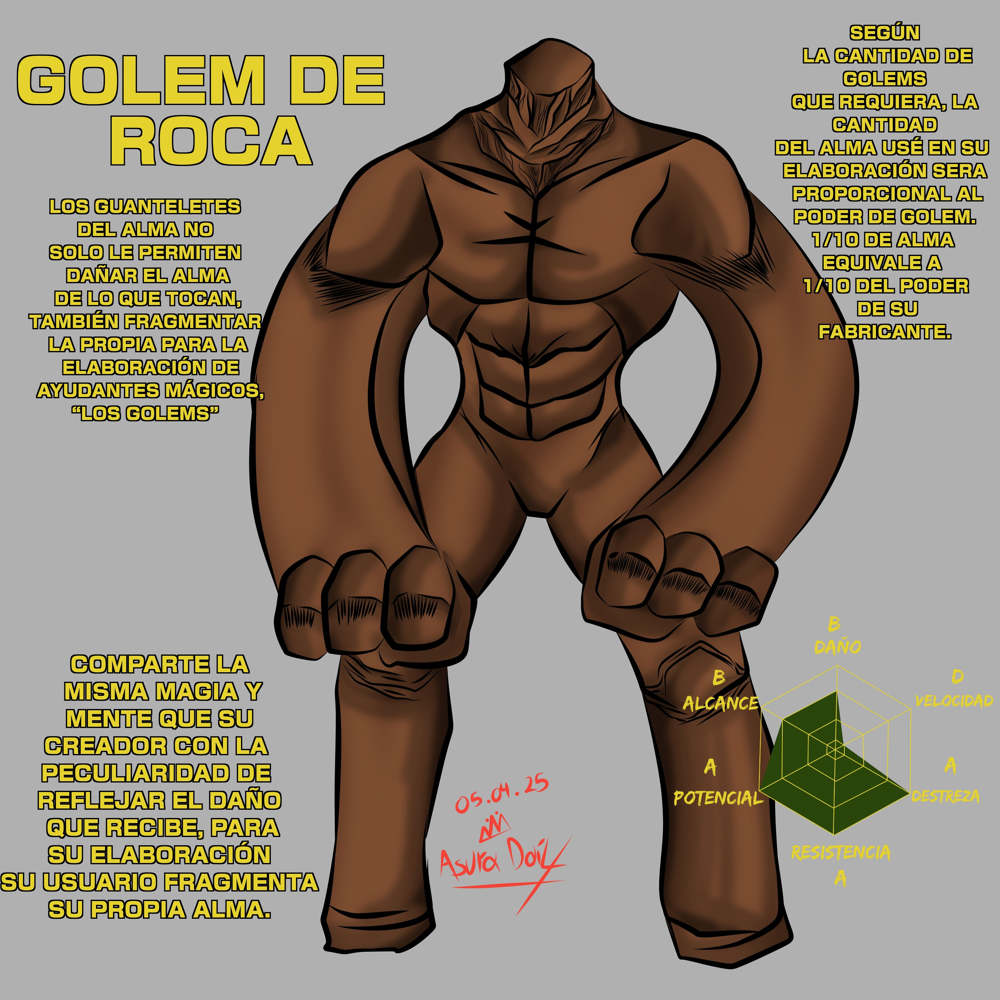

Perdido en un gran laberinto eleva la moral de su
grupo con su infalible liderazgo, enemigo de los
fantasmas y objetivo de los mismos, despertó su
poder mágico antes de dominar las técnicas de
exorcismo y recibió su tesoro sagrado como reconocimiento
a su talento. La tierra tiembla cuando despliega sus poderes
y sus tropas surgen de la roca.
Un ejército de Golems sería infranqueable y la defensa definitiva.
La Hechicera Diana buscaría unirlo a sus filas para rescatar a su
hermano del temible Rey Fantasma. Aunque en el camino descubrirá a
un feroz contrincante que lo desafiara a un combate a muerte, en
las profundidades del laberinto que los aprisionaba.